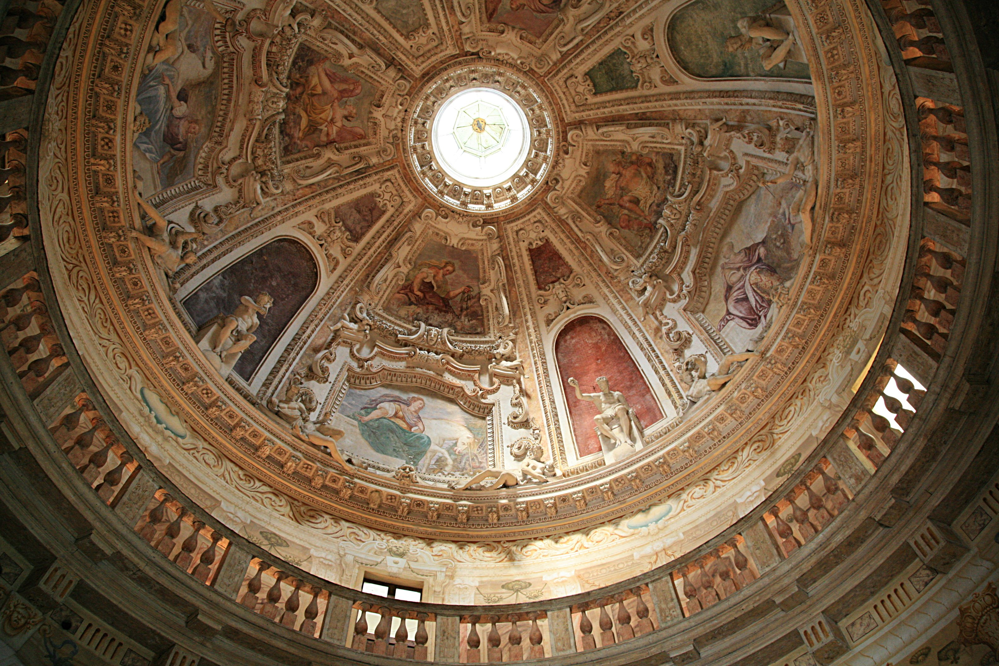

The interior design of the Villa was to be as wonderful, if not more so, than the exterior. Alessandro and Giovanni Battista Maganza and Anselmo Canera were commissioned to paint frescoes in the principal salons.
Among the four principal salons on the piano nobile are the West Salon (also called the Holy Room, because of the religious nature of its frescoes and ceiling), and the East Salon, which contains an allegorical life story of the first owner Paolo Almerico, his many admirable qualities portrayed in fresco.
The highlight of the interior is the central, circular hall, surrounded by a balcony and covered by the domed ceiling; it soars the full height of the main house up to the cupola, with walls decorated in trompe l'oeil. Abundant frescoes create an atmosphere that is more reminiscent of a cathedral than the principal salon of a country house.

 The site selected was a hilltop just outside the city of Vicenza. Unlike some other Palladian villas, the building was not designed from the start to accommodate a working farm. This sophisticated building was designed for a site which was, in modern terminology, "suburban". Palladio classed the building as a "palazzo" rather than a villa.
The site selected was a hilltop just outside the city of Vicenza. Unlike some other Palladian villas, the building was not designed from the start to accommodate a working farm. This sophisticated building was designed for a site which was, in modern terminology, "suburban". Palladio classed the building as a "palazzo" rather than a villa.  Building began in 1567. Palladio, and the owner, Paolo Almerico, a priest who commitioned it in 1565, were not to see the completion of the villa. Palladio died in 1580 and a second architect, Vincenzo Scamozzi, was employed by the new owners, the Capra brothers, to oversee the completion.
Building began in 1567. Palladio, and the owner, Paolo Almerico, a priest who commitioned it in 1565, were not to see the completion of the villa. Palladio died in 1580 and a second architect, Vincenzo Scamozzi, was employed by the new owners, the Capra brothers, to oversee the completion.